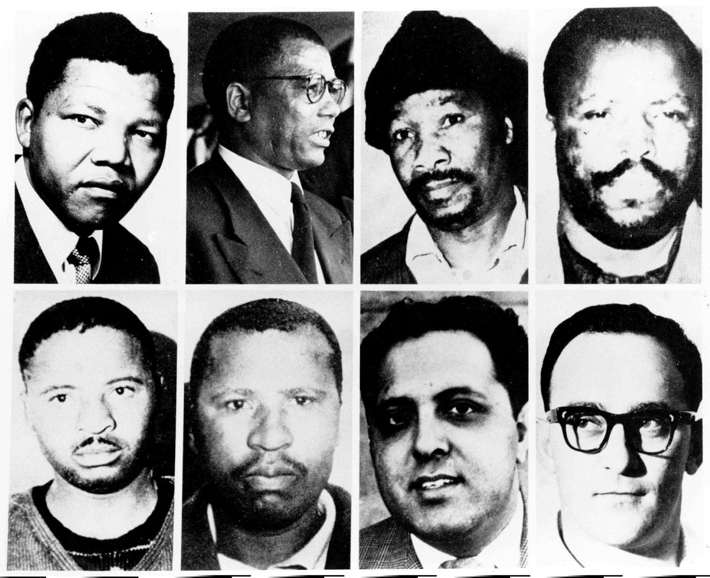

He received the name "Nelson" on his first day in primary school from his teacher Miss Mdingane .
Sadly when he was 12 his father died and he was raised by the Regent at the Great Place in Mqhekezweni.
Nelson studied hard at school and later attended the University of Fort Hare ,the South African Native College.
He then moved to the city of Johannesburg to study law at the University of the Witwatersrand ,
before qualifying as a lawyer in 1942 ,aged 24.
He received the name "Nelson" on his 1st day in primary school.
1942 aged 24, he moved to the city of Johannesburg to study law at the University of the Witwatersrand.
1944-1962
He started engaging in politics and he helped the formation of the
ANC
Within the same year he also married his first wife Evelyn Rakeepile .
In 1948 the South African government introduced a system called apartheid ,
which furthered the country's racial divide even more.
Under new racist laws, black people and white people were forced to live separate lives.
As an influencial leader of ANC apartheid by trying to make negotiations with the racist government but finally ignored,as
ANC had a military group called Umkhonto we Sizwe which fought for anti-racism.
This military was discovered by the government and Nelson Mandela with his collegues were all
arrested in 1962 a life sentence.
In 1942 Nelson Mandela married his first wife Evelyn Rakeepile.

In 1962 Nelson Mandela and his collegues was given a life sentence at Rivonia Trial.
1962-1989
Nelson was first sent to a prison on Robben Island Prison ,for 18 years.
He was then moved to Pretoria Local Prison to appear in court, then returned to the Island prison for nearly 10 years.1982 ,Nelson was transferred to Pollsmoor Prison ,
and later in 1988 , he moved for a final time to Victor Verster Prison near a town called Paarl.
Nelson Mandela didn't give up on what he believed in.
He even refused freedom on two occasions,
and instead chose to stand by his principles.
Robben Island Prison (Nelson Mandela spent 18/27 years in this prison).
In 1982 Nelson Mandela was moved to Pretoria Local Prison to appear in court
Victor Verster Prison where Nelson Mandela spent his last 14 months in prison.
Free Mandela Street Post
1990-2013
Over time, Nelson Mandela became a famous prisoner, and there were calls all around the world to Free Nelson Mandela! .1990 the president of South Africa, FW de Klerk, met with Nelson Mandela and in February/11/1990 and set him free!
This was done after the 9 days of unbannig of ANC and PAC .
For this work Nelson Mandela won the Nobel Peace Prize in 1993 , and on 27 April 1994 ,
Mandela was voted in South Africa's first democratic elections and he became the first South African black president .
In 1999 he retired as a president,but he was still a figure around the world as a symbol of peace and equality .tolerance ,
do or die actions and in additional he was a man of his word.5th/December/2013 having 95 years old because of the lung infections.
Rest In Peace Nelson Mandela you're still alive in our hearts.
Click ME to learn more about Nelson Rolihlahla Mandela(Madiba)
Back to top